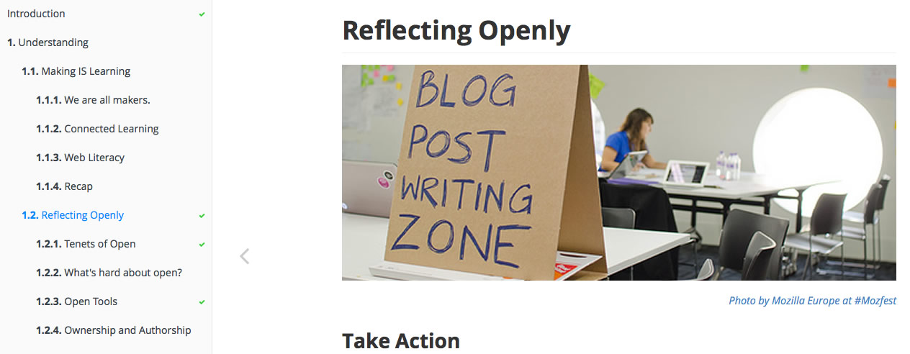

Living the Open Ethos:
Designing for Participation

Root Causes and Building New Stories
Pay attention and write. Or, ahem, Research, Analyze and Publish
Share more.
Open Source and Fearless Innovation
Decentralize, be transparent, allow for remix. Redefine “failure” and spur innovation.
should encourage failure.
Failure is a lesson in how not to do something. It’s a lack of success that teaches you what you need to be successful. It’s an omission of an expected result that inevitably leads to understanding of how to get the results you were looking for.
There are plenty of options.
Teams should be encouraged to choose what they like.
- Org wide syndicated blog hub
- Roadmaps on wikis
- Open task trackers like Trello or Github
- Common Taxonomies
- Open conversations with public notes (<3 Etherpad!)
- Regular updates for stakeholders (<3 Discourse!)
- Virtual water coolers (<3 IRC!)
- Monthly Org wide shareouts
Open is messy, but it is possible. Fearless innovation is a symptom of Open.
Hero among heroes and Change Agents
Everyone is a teacher, everyone is an evangelist

Participatory Professional Development
- Participatory: Engaging and activating participants from the beginning and getting them making and doing, rather than listening and watching.
- Purposeful: Working toward meaningful goals.
- Productive: Well-planned so that learning outcomes are achieved in the allotted time, and participants feel time was well spent.
- Playful: While the mission is a serious one, the more joy we find in it, the more we'll stick with it and the more people we'll attract to it.
Above bullets taken from the book I'm not finished writing Teach Like Mozilla
Connect with Multipliers
Open communities are full of people who want a better world.
Champions of the Impossible.
Just be you in all your glory. Own it. Be human.
Encourage open communication. Build trust.


It's not that hierarchies don't function, it just doesn't make sense to sever the connection between people & ideas.